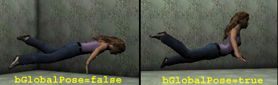

UDN
Search public documentation:
ActorFunctions
Interested in the Unreal Engine?
Visit the Unreal Technology site.
Looking for jobs and company info?
Check out the Epic games site.
Questions about support via UDN?
Contact the UDN Staff
Actor Functions
Created by Chris Linder (DemiurgeStudios?) on 12-08-03 for 2226 builds. Last Updated by Chris Linder (DemiurgeStudios?). Last update by Michiel Hendriks, adapeted content for v3323 and added more functions- Actor Functions
- Related Documents
- Introduction
- Misc
- Debug
- Physics
- Rendering
- Movement
- Relations
- Animation
- Animation Notifications
- Skeletal Animation
- LinkSkelAnim
- LinkMesh
- BoneRefresh
- AnimBlendParams
- AnimBlendToAlpha
- GetBoneCoords
- GetBoneRotation
- GetRootLocation
- GetRootRotation
- GetRootLocationDelta
- GetRootRotationDelta
- LockRootMotion
- AttachToBone
- DetachFromBone
- SetBoneScale
- SetBoneDirection
- SetBoneLocation
- SetBoneRotation
- GetAnimParams
- AnimIsInGroup
- Sound
- Latent functions
- Karma
Related Documents
ActorVariablesIntroduction
This document attempts to go over all native functions and events defined in Actor.uc. Native functions are functions defined in C++ that can be called from UnrealScript and events are UnrealScript functions called from C++. Currently this document is does not cover all native functions and events so if you find it lacking you should check UnProg or email chris@demiurgestudios.com.Misc
Trace
native final function Actor Trace( out vector HitLocation,
out vector HitNormal,
vector TraceEnd,
optional vector TraceStart,
optional bool bTraceActors,
optional vector Extent,
optional out material Material)
Trace is one of the most useful functions in UnrealScript. It casts a ray (aka "traces") into the world and returns what it collides with first. Trace takes into account both this actor's collision properties and the collision properties of the objects Trace may hit. If Trace does not hit anything it returns NONE; if Trace hits level geometry (BSP) it returns the current LevelInfo; otherwise Trace returns a reference to the Actor it hit.
HitLocation, HitNormal, Material -- If Trace hits something, HitLocation, HitNormal, and Material will be filled in with the location of the hit, the normal of the surface Trace hit, and the material Trace hit. Note that HitLocation is not exactly the location of trace hit, it is bounced back along the direction of trace a very small amount (in my tests it was between 0.5 and 3.9 Unreal Units).
TraceEnd, TraceStart -- When you call Trace, TraceEnd is the end of the line you want to trace and TraceStart is the beginning. If you do not specify TraceStart the current location of this actor will be used. The farther apart TraceEnd and TraceStart are the longer Trace will take to compute.
bTraceActors -- If you don't pass bTraceActors, Trace uses this actor's value of bCollideActors for bTraceActors. Pawns for example, have bCollideActors set to TRUE which means if you call Trace without bTraceActors it will use TRUE. When bTraceActors is FALSE the trace can only hit world geometry and movers. World geometry includes BSP, Terrain, blocking volumes, and things that have bWorldGeometry set to true, like StaticMeshes. If bTraceActors is TRUE, traces can additionally hit all other actor types. Based on bTraceActors, even if traces can hit a particular type of object, the individual actor collision settings of the object that might be hit determine if the traces do in fact hit. For example, many actors have bCollideActors set to FALSE which means no type of trace will hit that actor. Blocking volumes have bCollideActors set to TRUE but bBlockZeroExtentTraces set to FALSE which means zero extent traces (see below) will not hit blocking volumes. Non-zero extent traces will hit blocking volumes because bBlockNonZeroExtentTraces is TRUE. Sometimes the collision test is much more nuanced; for example, setting bProjTarget to TRUE will cause non-colliding actors to be hit by traces. Additionally, if the actor that might be hit has bOnlyAffectPawns set to TRUE and this actor is not a pawn, the trace will not hit. Likewise, if this actor has bOnlyAffectPawns set to TRUE, and the actor that might be hit is not a pawn, the trace will not hit. For more details on if a trace will hit a particular type of actor check the ShouldTrace function in C++ (if you have access to source).
Extent -- There are two types of traces in Unreal, zero-extent traces and non-zero-extent traces. A zero-extent trace is just a line in space; a non-zero-extent trace is a volume projected through space. Non-zero-extent traces are slower. Sometimes zero-extent traces are called line checks or line collision and non-zero-extent traces are called box checks or box collision. To do a zero-extent trace, either don't pass in Extent or a pass vect(0,0,0). To do a non-zero-extent trace, pass in anything other than a zeroed vector. Non-zero-extent traces function a little differently than zero-extent traces aside from the fact that one is a line and the other is a projected volume. When a zero-extent trace ends exactly on something, the trace does not hit that object; when a non-zero-extent trace ends exactly on an object, the trace hits that object.
The rest of this section will talk about non-zero-extent traces because zero-extent traces are pretty straight forward. The Extent of a non-zero-trace is interpreted differently for different types of actor and different types of collision. Each object potentially colliding with the projected trace volume gets to evaluate the collision in its own manner. For example, static meshes and BSP treat Extent as a world aligned rectangular prism. So if the X and Y values of Extent are different, Trace will behave differently depending on the direction in which the trace was done. Actors with cylinder collision interpret Extent as a cylinder (when Extent.X != Extent.Y the collision gets a little weird). In general you want to have the Extent.X == Extent.Y.
As an example of how non-zero-extent trace work differently for different objects, we will talk about pawn movement which uses non-zero-extent traces. If you make a BSP cube that is aligned at 45 degrees and pawns walk into the walls of this cube you will note that the collision cylinder of the pawn (shown my typing "rend collision" at the console in the UDNBuild) does not touch the walls. But if you walk into orthogonally aligned walls, the cylinder will touch the walls. This is because BSP treats the Extent of the trace for pawn movement as a world aligned rectangular prism. However, when two pawns walk into each other, they will bump into each other and slide off each other like they are true cylinders. This is because pawns treat the Extent of the trace for pawn movement as a cylinder.
Other documents of interest:
If you are using many traces in a row, you might want to check out the TraceActors iterator in the UnrealScriptReference. Also, for really nitty-gritty info on tracing and collision in C++ check out the CollisionHash document.
FastTrace
native final function bool FastTrace(vector TraceEnd, optional vector TraceStart)
FastTrace is very similar to Trace except that it has a simplified set of options and it is faster. Also, FastTrace does not return what it hit; it returns FALSE if it hit something and TRUE if it hit nothing. FastTrace only traces world geometry and movers. This is the same as having bTraceActors set to FALSE in the Trace function.
Spawn
native final function actor Spawn( class<actor> SpawnClass,
optional actor SpawnOwner,
optional name SpawnTag,
optional vector SpawnLocation,
optional rotator SpawnRotation)
Spawn creates an actor in the world. This function returns an actor of the specified class, not of class Actor (this is hardcoded in the compiler). Spawn returns NONE if the actor could not be spawned which will happen for example if the actor wouldn't fit in the specified location, or the actor list is full.
SpawnOwner is the Owner of this new actor. (See SetOwner for more info about Owner.) If you do not specify SpawnOwner, this actor will be spawned without an owner. If you specify a SpawnTag, the Tag of the new actor will be set to that, otherwise, it will not have a Tag.
SpawnLocation is the location at which the new actor is spawned. If no SpawnLocation is specified, the location of the actor calling Spawn is used. Likewise, SpawnRotation is the rotation for the newly spawned actor and if none is specified, the rotation of the actor calling Spawn is used.
ConsoleCommand
native function string ConsoleCommand( string Command, optional bool bWriteToLog )
Execute a console command in the context of the current level and game engine. In most cases this does not include "exec" functions in PlayerController or Pawn. Certain class, such as PlayerController and Interation override ConsoleCommand to execute exec functions in a different context. PlayerController for example executes function for the player and for the game engine. This means that calling the ConsoleCommand function in PlayerController.uc will have different results than calling the ConsoleCommand function in Pawn.uc. For example the function below will work when placed in a subclass of PlayerController but not when placed in subclass of Pawn.
bWriteToLog is new in v3323, if set to true the console command return will be written to the log file, in this case the return value is always empty.
exec function ConTest()
{
ConsoleCommand("ToggleBehindView");
}
Error
native final function Error( coerce string S )
Prints an error message of the following form and then destroys this one actor.
ScriptWarning: <ClassName> <MapName>.<ObjectName> (Function <PackageName>.<ClassName>.<FunctionName>:000E) <Text in string S>
For example, if you call the following function in class TestPawn when you are in the map "EM_Runtime"...
exec function ErrorTest()
{
Error("Error Test");
}
the following will be printed to the log:
ScriptWarning: TestPawn EM_Runtime.TestPawn0 (Function TestPawns.TestPawn.ErrorTest:000E) Error Test
OnlyAffectPawns
native final function OnlyAffectPawns(bool B)
This function sets the value of bOnlyAffectPawns to the value of B that you pass in. bOnlyAffectPawns is used for Trace calculations and to determine if actors are overlapping.
AddToPackageMap
native final function AddToPackageMap(optional string PackageName)
Add PackageName to the server's packagemap (as if it was in GameEngine's ServerPackages list). If PackageName is omitted, the package of the actor is added.
This function is only valid during initialization (between GameInfo::InitGame() and GameInfo::SetInitialState() )
If called outside of that window, or anytime on a client, the function returns without doing anything.
This function is usefull for optional add-ons that require a package to be in the ServerPackages list in order to work properly.
CopyObjectToClipboard
native function CopyObjectToClipboard(Object Obj)
Copy the specified object's properties to the clipboard, the format depends on the object's type.
* Actors are copied so that they can be pasted in UnrealEd
* The data copied for non-actors is to be used within the defaultproperties block of a script class.
GetNextInt
native final function string GetNextInt( string ClassName, int Num )
With this function it's possible to get the Object meta specifications in the [Public] section of the localization files. This was previously used for game types, mutators, weapons, etc (v3323 uses a much faster caching system for these now).
ClassName is the meta class of all objects to retrieve. Num is the sequence number. The return value is the name of the object found. To get all class names simply call this function while increasing num until an empty string is returned.
For example in Core.int the following is specified:
[Public] Object=(Name=Core.HelloWorldCommandlet,Class=Class,MetaClass=Core.Commandlet,Description="Hello world!")Calling
GetNextInt("Core.Commandlet", 0) will return "Core.HelloWorldCommandlet" .
GetNextIntDesc
native final function GetNextIntDesc( string ClassName, int Num, out string Entry, out string Description )
The object specifications in the [Public] section can also contain a Description=""section. This function allows you to retrieve this description together with the class name. This function works just like GetNextInt except that it doesn't return the class name.
GetAllInt
native static final function GetAllInt( string MetaClass, array Entries )
This function does the same as GetNextInt except that it returns all entries at once.
GetAllIntDesc
native static final function GetAllIntDesc( string MetaClass, out array Entry, out array Description )
This function does the same as GetNextIntDesc except that it returns all entries and descriptions at once.
GetCacheEntry
native final function bool GetCacheEntry( int Num, out string GUID, out string Filename )
This function will return the entries in the download cache (files downloaded from the server).
Num is the sequence number, keep calling this function while increasing Num to get all cache entries (until GUID is empty).
GUID is the global unique identifier of the downloaded package, and Filename is the filename of the package.
The cache entries can be moved from the cache by using the MoveCacheEntry functions.
MoveCacheEntry
native final function bool MoveCacheEntry( string GUID, optional string NewFilename )
This will move a cache entry from the cache to it's correct location. Depeding on the extention and the Paths configuration the file will be moved to the right directory. The file will be moved to the first directory in the Paths array the matches the filename, e.g. MyMap.ut2 -> ../Maps/ .
If NewFilename is empty the original filename will be used..
GetURLMap
native(547) final function string GetURLMap( optional bool bIncludeOptions )
This function returns the last URL, that is the URL used to get to the current level. If bIncludeOptions is true (defaults to false) also the options of the URL are included.
GetUrlOption
native final function string GetUrlOption(string Option)
Returns the value of an option given in the URL used to get to this level.
For example if the url is DM-MyMap?name=MyName?skin=MySkins.Skin1
The call GetUrlOption("name") returns "MyName" .
UpdateURL
native final function UpdateURL(string NewOption, string NewValue, bool bSaveDefault)
This will update the last used URL with NewOption and NewValue. If NewValue is empty the NewOption element will be removed.
If bSaveDefault is true the changes will be saved to User.ini so it will always be used in the future.
After calling UpdateURL the last URL is modified, so GetURLMap and GetUrlOption will return the modified URL.
Debug
DebugClock
native final function DebugClock()
DebugClock, along with DebugUnclock, can be used to time the performance of blocks of UnrealScipt. Calling DebugClock starts a timer that totals up milliseconds until DebugUnclock is called. You can see the results of this timer by typing "stat game" at the console in game. The last stat in the "Game" category is "ScriptDebug" which is how much time the DebugClock / DebugUnClock took. This value is calculated every frame so make sure you start and stop the clock within a frame.
DebugUnclock
native final function DebugUnclock()
See DebugClock.
DrawDebug*
native final function DrawDebugLine( vector LineStart, vector LineEnd, byte R, byte G, byte B) native final function DrawDebugCircle( vector Base, vector X, vector Y, float Radius, int NumSides, byte R, byte G, byte B) native final function DrawDebugSphere( vector Base, float Radius, int NumDivisions, byte R, byte G, byte B)Debug functions to draw arbitrary lines\circles\spheres. These functions are slow and should only be used for debugging. After the element is rendered it's cleared from the draw stack, so it won't be drawn the next frame. These elements are rendered as one of the last parts of the level scene, right before
HUD.eventWorldSpaceOverlays() is called.
More DrawDebug functions are available via the native class FTempLineBatcher.
DrawStayingDebugLine
native final function DrawStayingDebugLine( vector LineStart, vector LineEnd, byte R, byte G, byte B)
This function is almost identical to DrawDebugLine except that these lines are won't be cleared the next frame. The lines will be drawn until they are cleared.
ClearStayingDebugLines
native final function ClearStayingDebugLines()
This will clear the persistant lines drawn with DrawStayingDebugLine. It's the only way to get rid of them.
Physics
SetPhysics
native final function SetPhysics( EPhysics newPhysics )
This command sets the physics of this actor to newPhysics. For physics to work on an actor, that actor must have bStatic set to FALSE. The possible options for physics are:
-
PHYS_None-- Physics is not computed for this actor. This means that the actor does not move on its own though you can call functions like Move and SetLocation to move the actor. Attachments (see SetBase and AttachToBone) are normally set to PHYS_None. -
PHYS_Walking-- (Only used for Pawns) This pawn is moving on the ground and is sort of affected by gravity. "Sort of affected by gravity" means that if the pawn walks off an edge, or on a slope that is too steep, it will switch into PHYS_Falling at which point it will be affected by gravity. In most cases this works well but if a pawn runs from a flat surface to an sharply angled surface the pawn will be able to descend more quickly than if the pawn had run off a cliff. Clearly this is not correct but in most cases it is not noticeable. In v3323PHYS_Walkingis also available to any other actor, however it is very limited. It doesn't emulate friction, max speed, or anything. All it does is force the object to stick to the ground and climb up/down small steps. -
PHYS_Falling-- This object is falling and is affected by gravity. In many cases objects in PHYS_Falling will have their momentum redirected when they hit a non-floor surface. "Floors" are anything that is within 45 degree of flat (this is the same as floors that Pawns can walk on, seeMINFLOORZfor more details). Also, objects that bounce or objects that implement a HitWall function will handle momentum in their own way. -
PHYS_Swimming-- (Used only for Pawns.) This pawn is swimming in water. -
PHYS_Flying-- (Only used for Pawns) This pawn is flying and is not affected by gravity. In v3323 a simple version ofPHYS_Flyingis also available to all other actors. -
PHYS_Rotating-- This actor will rotate in place in one of two ways. If you set bFixedRotationDir isTRUE(and set bRotateToDesiredFALSE), the actor will rotate at the rate specified in RotationRate which is given in Unreal Rotation Units (65536 = 360 degrees) per second. Each frame RotationRate is multiplied by DeltaTime and is then added to Rotation which means that rotation will always take place in global space. The other way to rotate is set bRotateToDesired toTRUE(and set bFixedRotationDir toFALSE) and specify a rotation in DesiredRotation. The Rotation of this actor will approach DesiredRotation at the rate specified by RotationRate. When Rotation equals DesiredRotation the actor will not longer rotate. -
PHYS_Projectile-- This actor is a projectile. It is not affected by gravity and travels in a straight line based on its Velocity and Acceleration. Actors with PHYS_Projectile can rotate in the same way as PHYS_Rotating actors described above. Also, actors with PHYS_Projectile can bounce. -
PHYS_Interpolating-- PHYS_Interpolating does not appear to be used. -
PHYS_MovingBrush-- (Only used for Movers) This is the physics type for movers. -
PHYS_Spider-- (Only used for Pawns) This pawn can walk on any surface and aligns with the surface it is on. The pawn is not affected by gravity. -
PHYS_Trailer-- PHYS_Trailer is used for actors that should be attached to their owners (see SetOwner). This is for things like smoke trails on rockets and other effects. Using PHYS_Trailer is similar to attaching an object to another object using SetBase but a few things are handled differently. First off, when you set the physics of an actor to PHYS_Trailer, it sets the location of the actor to that of its owner; you can not have a relative offset. If this actor has DrawTypeDT_Sprite, you can specify an absolute offset in PrePivot by setting bTrailerPrePivot toTRUE. The rotation of this actor can be adjusted in many ways using the variables bTrailerAllowRotation and bTrailerSameRotation. By default both of these variables areFALSEand this actor takes on an orientation based on the direction of the velocity of the owner actor; the normal of the velocity is negative X. This allows you to create effects that "trail" behind the owner actor as it moves. If bTrailerAllowRotation isTRUE(and bTrailerSameRotation isFALSE), this actor can set its own rotation which will not be based on the motion of the owner. In this case you can control the rotation of this actor however you want, for example by using RotationRate as described in PHYS_Rotating above. If you set bTrailerSameRotation toTRUE(and bTrailerAllowRotation toFALSE) the rotation of this actor will be the same as the rotation of the owner. -
PHYS_Ladder-- (Only used for Pawns) PHYS_Ladder is the physics used when pawns are climbing ladders (ladders are created by placing LadderVolumes). Only pawns with bCanClimbLadders set toTRUEcan climb ladders. -
PHYS_RootMotion-- Root motion is only partially implemented. If you are interested in using root motion, see the RootMotionPhysics document which discusses adding this feature to the engine. -
PHYS_Karma-- This actor uses Karma physics. See the KarmaReference for more details. -
PHYS_KarmaRagDollThis actor uses Karma ragdoll physics. See the KarmaAuthoringTool document for more details. -
PHYS_Hovering(new in v3323) An actor in PHYS_Hovering will hover a bit above the ground (about 20% of the CollisionHeight ) and is less affected by gravity and friction (only 50%) -
PHYS_CinMotion(new in v3323) Used for cinematics. In PHYS_CinMotion collision is turned off during motion.
Bouncing
Actors with physics PHYS_Falling and PHYS_Projectile can bounce. To do this, bBounce must be set toTRUE as well as having a HitWall function to handle the actual bouncing. The HitWall function can set the velocity of the actor however it wishes but in most cases a simple reflection is preferable. Rotation can also be set in this function. Below is a very simple class for a bouncing actor that will be 100 percent reflected whenever it hits a surface. Currently this actor is set up to use PHYS_Falling but it can also use PHYS_Projectile which is currently commented out.
class Bouncer extends Actor
placeable;
var() float BounceRatio;
simulated function HitWall (vector HitNormal, actor HitWall)
{
Velocity = BounceRatio * (( Velocity dot HitNormal ) * HitNormal * (-2.0) + Velocity);
}
defaultproperties
{
bBounce=true;
BounceRatio=1.0
Physics=PHYS_Falling
//Physics=PHYS_Projectile
//Velocity=(X=50,Y=100,Z=200)
DrawType=DT_StaticMesh
StaticMesh=StaticMesh'Editor.TexPropCube'
drawscale=0.05
bCollideWorld=true
bCollideActors=true
bBlockActors=true
bBlockPlayers=true
CollisionRadius=+00025.000000
CollisionHeight=+00025.000000
}
SetCollision
native final function SetCollision( optional bool NewColActors, optional bool NewBlockActors, optional bool NewBlockPlayers )
This function resets the following collision variables in this actor; bCollideActors, bBlockActors, and bBlockPlayers. It also updates all the touching and collision hash information. This function is necessary to change bCollideActors, which is const, but it should be also be used to change bBlockActors and bBlockPlayers. For more details on the actor collision variables see the ActorVariables document.
SetCollisionSize
native final function bool SetCollisionSize( float NewRadius, float NewHeight )
This function sets a new CollisionRadius and CollisionHeight for this actor. This function is necessary to change CollisionRadius and CollisionHeight from script because they are const. This function will not work perfectly for Pawns because when the pawn crouches and un-crouches, the collision cylinder will get reset to the default. It is worth noting that the "Set" console command can be used to change CollisionRadius and CollisionHeight in-game (see the PawnTricksAndTips document for more details.)
Rendering
SetDrawScale
native final function SetDrawScale(float NewScale)
SetDrawScale changes the DrawScale of an actor. This function is needed because DrawScale is const and therefore cannot be changed directly. (see the ActorVariables document for more details on DrawScale.)
SetDrawScale3D
native final function SetDrawScale3D(vector NewScale3D)
SetDrawScale3D changes the DrawScale3D of an actor. This function is needed because DrawScale3D is const and therefore cannot be changed directly. (see the ActorVariables document for more details on DrawScale3D.)
SetStaticMesh
native final function SetStaticMesh(StaticMesh NewStaticMesh)
SetStaticMesh changes the StaticMesh of an actor. This function is needed because StaticMesh is const and therefore cannot be changed directly. (see the ActorVariables document for more details on StaticMesh.)
SetDrawType
native final function SetDrawType(EDrawType NewDrawType)
SetDrawType changes the DrawType of an actor. This function is needed because DrawType is const and therefore cannot be changed directly. (see the ActorVariables document for more details on DrawType.)
Movement
#moveMove
native final function bool Move( vector Delta )
Move tries to move the actor by a movement vector. If the actor has no attachments and bCollideActors and bCollideWorld are both false, this function just does a Location+=Delta, which is very-very fast. Move assumes that the actor's Location is valid and that the actor fits in its current Location. If bCollideWorld is true, Move checks collision with the world. Then, for every actor-actor collision pair, this function performs the following checks:
- If both actors have bCollideActors and bBlocksActors, performs collision rebound, and dispatches Touch messages to touched-and-rebounded actors.
- If both actors have bCollideActors but either one doesn't have bBlocksActors, checks collision with other actors (but lets this actor interpenetrate), and dispatches Touch and UnTouch messages.
SetLocation
native final function bool SetLocation( vector NewLocation )
This function sets the location of an actor in the world. It is generally used for moving actors long distances, through teleporters, adding them to levels, and starting them out in levels. The result of this function is independent of the actor's current location and rotation. This means that no mater where the actor is, if it can fit in the NewLocation it will be put there, even if the NewLocation is totally isolated from the current location (note: this behavior is different from the Move function). The rotation of the actor is unchanged by the SetLocation call. If the actor doesn't fit exactly in the location specified, SetLocation tries to slightly move it out of walls and such.
Returns true if the actor has been successfully moved, or false if it couldn't fit. SetLocation also updates the actor's Zone and PhysicsVolume.
It is worth noting that in cases where you are calling SetLocation a lot (every frame or so) for "short" distances" you might want to think about using Move instead. In most cases, it is faster to call Move for short distances because SetLocation rehashes the actor in the collision hash and rehashing an actor is not a super quick operation.
SetRotation
native final function bool SetRotation( rotator NewRotation )
SetRotation changes the Rotation of an actor. This function is needed because Rotation is const and therefore cannot be changed directly. SetRotation ensures that everything attached to the actor rotates as well.
SetRelativeRotation
native final function bool SetRelativeRotation( rotator NewRotation )
SetRelativeRotation changes the relative rotation for actors attached to other actors. The NewRotation specified is relative to the base actor to which this actor is attached. When called on an actor that is not attached to anything, SetRelativeRotation behaves like SetRotation.
SetRelativeLocation
native final function bool SetRelativeLocation( vector NewLocation )
This function sets the Location of this actor relative to the position and orientation of the actor to which it is attached. This means that the position of this actor will be set relative to the local coordinate system of the base actor. When SetRelativeLocation is called on an actor that is not attached to anything, it does nothing.
MoveSmooth
native final function bool MoveSmooth( vector Delta )
This function is very similar to the Move function but when you hit something while moving, this function keeps the actor moving as best it can by sliding the actor along a wall, or going up steps, or however it might be possible for the actor to move.
AutonomousPhysics
native final function AutonomousPhysics(float DeltaSeconds)
AutonomousPhysics runs the physics for this actor the given about of time DeltaSeconds. The physics is run right when this function is called, independent of tick or the actual game time. In general this function is used to deal with net-play.
Relations
SetBase
native final function SetBase( actor NewBase, optional vector NewFloor )
SetBase is a fairly nuanced and complex function. It is most commonly used for attaching one actor to another. This is done in the following manner:
ActorToAttach.SetBase(BaseActor); - or - ActorToAttach.bHardAttach = true; ActorToAttach.SetBase(BaseActor);When SetBase is called, the relative position of the attached actor is saved and it is at this position that the actor will be attached. When the base actor moves and rotates, the attached actor will be updated with the new movement and rotation. The way movement and rotation of the attached actor is handled depends on the value of bHardAttach of the attached actor. If bHardAttach is true, the relative location of the attached actor is reset every time the base actor moves to account for the new location and orientation of the base actor. This means as long as the base actor is moving, the attached actor will maintain the exact same relative location and orientation to the base actor. If bHardAttach is false, each time the base moves or rotates, the base will update the location of the attached actor with the delta movement. If the attached actor is moving on its own, the movement of the attached actor will be added to the movement of the base. There is one major caveat to the movement of attached actors, which is collision. When the position of the attached actor is updated, the equivalent of Move is called, not the equivalent of SetLocation. This means that attached actors can "get caught" on things when the base is moving. In most cases this is solved by turning off blocking collision for attached actors but turning off collision may not always desirable. If collision is not turned off, imagine the situation where an actor that is blocked by static meshes is attached to the player pawn. The player pawn moves such that the attached object is on the other side of a static mesh tree and backs away. The object will be blocked by the tree and the player pawn will be able to back far away from it. If bHardAttach is true, the attached object will snap back to the relative attached location as soon as there is a clear path from the tree to the location at which the attached actor should be. If bHardAttach is false, the attached actor will stay a long distance away when it gets unstuck on the tree. The other major use of SetBase is to control what Pawns are walking on. Everything from BSP geometry to static meshes to movers to terrain can be a base for a pawn. All the setting of bases for pawns is handled in low level movement code. It is not effective to set the base of a pawn if the physics of that pawn is anything other than
"PHYS_None" because the base will just be reset. Pawns are the only case in which the NewFloor vector is relevant. NewFloor sets the Floor vector in Pawn.uc which is the normal for the "base" on which the pawn is standing. You can see the use of the Floor normal most prominently in "PlayerSpidering" when the pawns physics are equal to "PHYS_Spider".
SetOwner
native final function SetOwner( actor NewOwner )
This function sets the Owner variable in Actor.uc. SetOwner also calls the event LostChild if the actor had an existing Owner and calls GainedChild on the new Owner.
Animation
There are several documents on UDN that cover animation; these documents are: UWSkelAnim?, PawnAnimation, MyFirstPawn, SkeletalBlending, and RootMotionPhysics.GetMeshName
native final function string GetMeshName()
Returns the name of the Mesh of this actor. Mesh is the skeletal mesh or vertex mesh that is used if DrawType==DT_Mesh. If this actor does not have a mesh, GetMeshName returns an empty string.
PlayAnim
native final function PlayAnim( name Sequence,
optional float Rate,
optional float TweenTime,
optional int Channel )
PlayAnim starts playing the animation given by Sequence.
You can set the rate at which the animation will be played using Rate. A value of 1.0 means that animation will be played at the rate given in the Animation Browser. A Rate less than 1.0 will play slower than normal and a Rate greater than 1.0 will play faster than normal. If you do not include Rate in the PlayAnim call, it defaults to 1.0.
TweenTime is used for blending animations. TweenTime is the amount of time used to blend animation from the previous animation to the start of this animation. When PlayAnim is called, the previous animation stops immediately and the mesh starts "tweening". The animation given by Sequence will not start until the "tweening" is done. So if there is an animation that is 2.0 seconds long, and your TweenTime is 1.0 seconds, the animation will finish 3.0 seconds after the PlayAnim call. Note: Tweening and animation channels, covered below, sometimes don't get along well; see the PawnAnimation document for more details.
Animation can be played on multiple channels. All animation channels are blended together to produce a single animation. The way in which the animations are blended depends on how each channel is setup (see AnimBlendParams and AnimBlendParams for more details). For more information on how channels can be used, see the PawnAnimation document.
LoopAnim
native final function LoopAnim( name Sequence,
optional float Rate,
optional float TweenTime,
optional int Channel )
LoopAnim is very similar to PlayAnim with the main difference that the animation loops instead of plays once. Also, if you call LoopAnim with the same Sequence as the animation that is currently looping, the animation keeps playing and does not go back to the beginning (this is different from the way PlayAnim works). If the Rate you specify is different from the current Rate, the animation will use the new Rate.
The trickiest aspect of LoopAnim is not the function itself, but the default way in which animation works for Pawns. Every time a Pawn finishes playing an animation on channel 0, the AnimEnd event calls PlayWaiting which in most cases plays a new animation based on the state of the Pawn. This means that if you call LoopAnim and don't specify a channel (or use channel 0) the animation will probably not loop because the looping animation will be overridden by PlayWaiting. For more details on PlayWaiting see the MyFirstPawn document.
AnimStopLooping
native final function AnimStopLooping(optional int Channel)
Stops the looping animation in Channel. Channel defauls to channel 0. See LoopAnim about looping animations.
TweenAnim
native final function TweenAnim( name Sequence,
float Time,
optional int Channel )
TweenAnim blends to the first frame of the animation given by Sequence in the given amount of Time on the given Channel. This function does not play the animation; it just goes to the first frame. Unlike LoopAnim, TweenAnim does not deal with being called with the same Sequence in a row in any special way.
IsAnimating
native final function bool IsAnimating(optional int Channel)
This function returns true if animation is being played on the given Channel.
FinishAnim
native final latent function FinishAnim(optional int Channel)
FinishAnim can only be used in latent state code because it is a latent function. For more details on latent state code see the UnrealScriptReference. FinishAnim pauses the execution of latent code until the animation on the given Channel of this actor (or if this actor is a Controller, the controller's Pawn) has completed, and then continues. If no Channel is given, the base channel (channel 0) is used.
HasAnim
native final function bool HasAnim( name Sequence )
This returns TRUE if the Mesh of this actor has an animation with the name given by Sequence. HasAnim returns FALSE if this actor does not have a Mesh or the Mesh does not have the given animation.
StopAnimating
native final function StopAnimating( optional bool ClearAllButBase )
If ClearAllButBase is omitted or is FALSE, calling StopAnimating makes all channels freeze in the current pose. If there are any animations playing on channels higher than the base channel (channel 0) these animations will be frozen in place as well and so they will mask all animations on lower channels such as movement animations. The end result is that you see the frozen pose of the highest animation channel.
If ClearAllButBase is TRUE, all the animation channels higher than the base channel (channel 0) will be cleared such that they do not affect the animation of the mesh. The base channel will also be frozen in its current pose. Then end result is that you see the frozen pose of the base channel.
In both cases no AnimEnd events are called.
FreezeAnimAt
native final function FreezeAnimAt( float Time, optional int Channel)
This function freezes the current animation on the given Channel (if Channel is not given, 0 is used) at the frame given by Time. If the current animation is 31 frames and you pass 15.5 into Time, the animation will freeze exactly half way through. There is no tween or blending; the animation just snaps to that frame. You must be playing an animation on the given Channel for this function to work.
SetAnimFrame
native final function SetAnimFrame( float Time,
optional int Channel,
optional int UnitFlag )
SetAnimFrame sets the current frame of animation on the given Channel to be to the frame given by Time. If no Channel is given, the base channel (channel 0) is used. If UnitFlag is not included or is "0", Time is interpreted as a ratio of how far through the animation to set the frame. If UnitFlag is "1", Time is interpreted as a frame number for the currently playing animation.
IsTweening
native final function bool IsTweening(int Channel)
This function returns TRUE if the given Channel is currently tweening. See PlayAnim and TweenAnim for more details on tweening.
Animation Notifications
AnimEnd
event AnimEnd( int Channel )
AnimEnd is called when an animation finishes playing. When animation loops, AnimEnd is called at the end of every loop. Channel is the animation channel on which the animation ended.
The calling of AnimEnd can be disabled for a particular actor by calling Disable('AnimEnd');; you can re-enable AnimEnd by calling Enable('AnimEnd');. By default, AnimEnd starts enabled. The calling of AnimEnd can be enabled and disabled for a particular channel by calling EnableChannelNotify. AnimEnd defaults to enabled so unless you take the time to change it, you will get the AnimEnd event.
AnimEnd is handled uniquely for Pawns. If the pawn has a controller and the controller is listening for AnimEnd events then the AnimEnd will be called on the controller and not the pawn. A controller will be listening for AnimEnd events if it had defined an AnimEnd function and it has not disabled AnimEnd events by calling Disable('AnimEnd'); as described above. If there is no AnimEnd function in the controller, then the controller will not listen for the event. If the pawn does not have a controller or the controller is not listening for AnimEnd, the event will be called on the pawn.
EnableChannelNotify
native final function EnableChannelNotify ( int Channel, int Switch )
This function enables and disables animation notifies for the given Channel. This includes AnimEnd events as well as AnimNotifies. If Switch is "0", the given channel will no longer process notifies and AnimEnd will no longer be called. If Switch is "1" the given channel will process notifies again.
GetNotifyChannel
native final function int GetNotifyChannel()
GetNotifyChannel returns that last channel that received an animation notify. This only includes AnimNotifies and does not include AnimEnd events. This function is never used (not in the UDNBuild, the Runtime, UT2003, UT2004, or Warfare). I am not sure how this function would be useful.
Skeletal Animation
Most of the functions listed below will only work with skeletal meshes. Unless noted otherwise the function only works for skeletal meshes, not for vertext meshes or any other type. Pre-v3323 these function only work with skeletal meshes. Many of these functions take a BoneName. This can be the name of a bone as shown when you view bone names in the Animation Browser. This can also be the name of an attach socket created in the Animation Browser. Sockets can also be created using"#exec" commands in UnrealScript like so:
#exec MESH ATTACHNAME MESH=WarriorMesh BONE="right_wrist_2" TAG="weaponbone" YAW=-64.0 PITCH=00.0 ROLL=128.0 X=0 Y=0 Z=0
LinkSkelAnim
simulated native final function LinkSkelAnim( MeshAnimation Anim,
optional mesh NewMesh )
This function links the given animation, Anim, to the Mesh of this actor if it had one. This function does about the same thing as what the Link animation to mesh? button does in UnrealEd. It takes an existing animation and makes it part of the set of animations a given mesh has. If a NewMesh is given, the Mesh of this actor will be changes to the NewMesh. Note that if the actor does not have a valid skeletal mesh to start with, NewMesh will not be used.
Helpful Hint: LinkSkelAnim can be used by Mod makers to dynamically add new animations to an existing mesh in a game where they can't change the animation package. First import the animation in from a PSA using "#exec" like so:
#exec ANIM IMPORT ANIM=FunAnim1 ANIMFILE=MODELS\FunAnim1.PSA COMPRESS=0.9 MAXKEYS=9999999 #exec ANIM DIGEST ANIM=FunAnim1 USERAWINFO VERBOSEThen use LinkSkelAnim (in a function like AssignInitialPose in UT2003) to link the new animation to the existing skeleton like so:
simulated function AssignInitialPose()
{
super.AssignInitialPose();
LinkSkelAnim(MeshAnimation'FunAnim1');
}
LinkMesh
simulated native final function LinkMesh( mesh NewMesh,
optional bool bKeepAnim )
LinkMesh sets the Mesh of the actor to NewMesh. If the actor has an existing skeletal mesh and bKeepAnim is TRUE, then the NewMesh will keep the animations of the old mesh as well as its own.
BoneRefresh
native final function BoneRefresh()
BoneRefresh ensure that all the bones in the skeletal mesh of this actor have been updated or set up at least once. This is useful to ensure that you never see a mesh in the initial T-pose / reference pose. For example UT2003 calls BoneRefresh in AssignInitialPose (a function unique to UT200x that is called from PostBeginPlay).
AnimBlendParams
native final function AnimBlendParams( int Stage,
optional float BlendAlpha,
optional float InTime,
optional float OutTime,
optional name BoneName,
optional bool bGlobalPose)
Before playing animation on any channel, you need to call AnimBlendParams to set up that channel. Channels are blended in order starting at the base channel (channel 0) with higher channels blended on top. This means that animations played on higher channels will mask animations played on lower channels. The amount of masking of course depends on the BlendAlpha of the higher animation channel and which bones the higher channel affects. When setting up a channel you can tell it to only affect a subset of the bones in the skeletal mesh. The parameters of AnimBlendParams are described in detail below.
-
Stage-- This is the channel you want to setup. (Sometimes channels are called stages.) -
BlendAlpha-- This is the alpha with which to blend this channel, (0.0 - 1.0). If BlendAlpha is 0.0, this channel will not affect the animation of the skeleton at all. If BlendAlpha is 1.0, the animation played on this channel will mask animation on all channels lower than it. BlendAlpha defaults to 0.0. -
InTime-- This is the ease-in time to ramp up to full BlendAlpha. InTime is given as a 0.0 - 1.0 fraction of the total animation sequence time. Note that if InTime is non-zero, looping animation will look very bad because the ramp up will happen every time the animation starts. To avoid this popping problem call AnimBlendParams with InTime = 0 and BlendAlpha = 0 and then call AnimBlendToAlpha to fade the channel in. InTime defaults to 0.0 -
OutTime-- Reserved (not currently implemented). -
BoneName-- This is the name of the start bone from which the blending is to take effect, down the hierarchy. All the bones down in the hierarchy from the specified bone and including the specified bone are used when animations are played on this channel. See the SkeletalSetup? and PawnAnimation documents for more details about setting up skeletons in a way that AnimBlendParams can be used effectively. If BoneName is not specified, this channel will effect the whole skeleton. -
bGlobalPose-- Normally bGlobalPose isFALSE. If bGlobalPose isTRUE, use the global orientations for the bones this channel affects. This means that the hierarchy of bones before BoneName will not affect the rotation of the bones in this channel. The previous bones will still affect the location of the bones for this channel however. Refer to the picture below to see how different settings of bGlobalPose can effect animation. To create the picture, a swimming animation was played on the whole body and then a hands-on-desk animation was played on the upper part of the body. bGlobalPose defaults toFALSE,

In v3323 this function can be used for all meshes, not just skeletal meshes.AnimBlendToAlpha
native final function AnimBlendToAlpha( int Stage,
float TargetAlpha,
float TimeInterval )
AnimBlendToAlpha blends the alpha of the channel given by Stage to the TargetAlpha over the given TimeInterval. TimeInterval is given is seconds. You can use AnimBlendToAlpha to blend the alpha of a channel both in an out.
GetBoneCoords
native final function coords GetBoneCoords( name BoneName )
GetBoneCoords returns the global coordinates of the bone specified by _BoneName. The results are returned as a Coords struct (definition shown below). Origin is the location of the bone and axes are the orientation of the bone (XAxis is forward).
struct Coords
{
var() config vector Origin, XAxis, YAxis, ZAxis;
};
GetBoneRotation
native final function rotator GetBoneRotation( name BoneName,
optional int Space )
GetBoneRotation returns the global orientation of the bone specified by BoneName as a Rotator. The result of this function cast as a Vector will return the same thing as XAxis of GetBoneCoords. The Space parameter of GetBoneRotation is completely ignored
GetRootLocation
native final function vector GetRootLocation()
This seems to be part of an unfinished root motion system.
GetRootRotation
native final function rotator GetRootRotation()
This seems to be part of an unfinished root motion system.
GetRootLocationDelta
native final function vector GetRootLocationDelta()
This seems to be part of an unfinished root motion system.
GetRootRotationDelta
native final function rotator GetRootRotationDelta()
This seems to be part of an unfinished root motion system.
LockRootMotion
native final function LockRootMotion( int Lock );
This seems to be part of an unfinished root motion system.
AttachToBone
native final function bool AttachToBone( actor Attachment,
name BoneName )
AttachToBone attaches the given actor Attachment to the bone given by BoneName. When this function is called, the location and rotation of Attachment are set to those of the attach bone. If the location or rotation of a particular bone is undesirable, keep in mind that you can pass the name of an attach socket to BoneName as described above. When attaching to a socket the Attachment uses the relative location and rotation specified in the Animation Browser. You can also change the relative location and rotation of the attached actor by calling SetRelativeLocation and SetRelativeRotation.
Attachments are rendered only when their base actor is visible and being rendered; there are no separate visibility determination is executed for attachments. Attachments are rendered recursively but without checking for circular dependencies.
DetachFromBone
native final function bool DetachFromBone( actor Attachment )
This function detaches the given Attachment from the actor it is attached to. Presumably Attachment is attached to this actor, but really it does not matter; DetachFromBone will detach it from any actor as long as this actor has a valid skeletal mesh. Presumably Attachment was attached using the AttachToBone function but it could have been attached using SetBase and DetachFromBone will not care.
SetBoneScale
native final function SetBoneScale( int Slot,
optional float BoneScale,
optional name BoneName )
SetBoneScale sets the scale of the bone given by BoneName. This function scales not only the given bone, but all bones in the subsequent hierarchy. BoneScale is the new scale. The tricky part of SetBoneScale is the interesting idea of Slots. There can be 256 slots each of which stores a bone name and a bone scale. You can have the same bone name in multiple slots. The slots you specify do not need to be contiguous (you can specify any index from 0 to 255) but the smaller the largest slot index you use, the faster things will run. The engine then goes through all the slots and applies the given scale to the given bone. Given that scaling is a multiply, the order does not matter.
You can have scales canceling each other out or exaggerating each other. If you want to scale just part of the skeletal hierarchy (like a bicep) you can apply a scale to the bone at the base of the hierarchy you want to effect (the bicep bone) and then apply the inverse of that scale at the point in the hierarchy you no longer want the scale (the forearm bone).
This function can be used for all meshes.
SetBoneDirection
native final function SetBoneDirection( name BoneName,
rotator BoneTurn,
optional vector BoneTrans,
optional float Alpha,
optional int Space )
This function works in model or world space. To use local bone space see SetBoneLocation and SetBoneRotation.
This function sets the rotation and relative location of the bone given by BoneName which affects the subsequent bones in the hierarchy. When you call SetBoneDirection the transform you apply will remain in effect until it is disabled. To disable the effect of SetBoneDirection, call SetBoneDirection with an Alpha of "0" or call StopAnimating(true). Setting the Alpha to zero significantly reduces the amount of computation used for calculating the previous SetBoneDirection for the given bone but it will still be marginally more than never having called SetBoneDirection. StopAnimating nullifies all previous SetBoneDirection calls for this actor's mesh.
BoneTurn is a rotator that describes the desired orientation of the bone. BoneTurn can be interpreted as being in either model space or global space depending on the value of Space. If Space is "0" (which it defaults to), BoneTurn will be applied in model space. This means that the rotation will be applied with relation to the current coordinate system of the model, which in most cases is the coordinate system of the actor. The only caveat with model space is that it does not account for the rotations applied in the Animation Browser?; this is when the model space and actor space do not agree. When BoneTurn is applied in model space, animations will still affect this bone because BoneTurn is added to the animation rotation. Calling SetBoneDirection with BoneTurn equal to "(0,0,0)" and Space set to "0" will set the given bone to its normal orientation (it will look the same as having never called SetBoneDirection but be more computationally costly; see above for how to turn off SetBoneDirection).
If you set Space to "1", BoneTurn will be applied in global space. This means that the bone will always point the same direction no mater what direction the actor is facing or what animation is playing. Using global space is almost as fast using local space. There are three additional calls to Vector Normalize() and that is the only major difference. The only purpose for the calls to Normalize is to preserve scale. This is to account for things like DrawScale and the scale set in the Animation Browser?. When Space is "1" you can not use bone scaling like SetBoneScale.
BoneTrans is the relative offset for the given bone. BoneTrans is always applied in global space regardless of Space.
To limit the effect of SetBoneDirection you can use Alpha. BoneTurn and BoneTrans are both multiplied by Alpha before they are applied. When you use Alpha in model space (Space is 0), as Alpha approaches 0, the effect of SetBoneDirection will become less noticeable. When you use Alpha in global space (Space is 1), BoneTurn behaves oddly. As Alpha approaches 0, BoneTurn will get smaller but since the transformation will still be in global coordinates, the transformation will not approach normal animation.
SetBoneLocation
native final function SetBoneLocation( name BoneName,
optional vector BoneTrans,
optional float Alpha )
This function works in local bone space. To use model or world space see SetBoneDirection.
SetBoneLocation sets the relative location of the bone given by BoneName. BoneTrans is the relative offset for the given bone and is applied in local bone space. Alpha is the intensity with which the BoneTrans is applied. If Alpha is 0, the bone translation will not be applied.
Like SetBoneDirection, when you call SetBoneLocation the transform you apply will remain in effect until it is disabled. To disable the effect of SetBoneLocation, call SetBoneLocation with an Alpha of "0" or call StopAnimating(true). Setting the Alpha to zero significantly reduces the amount of computation used for calculating the previous SetBoneLocation for the given bone but it will still be marginally more than never having called SetBoneLocation. StopAnimating nullifies all previous SetBoneLocation calls for this actor's mesh.
This function can be used for all meshes.
SetBoneRotation
native final function SetBoneRotation( name BoneName,
optional rotator BoneTurn,
optional int Space,
optional float Alpha )
This function works in local bone space. To use model or world space see SetBoneDirection.
SetBoneRotation sets the rotation of the bone given by BoneName. BoneTurn is a rotator that describes the desired relative rotation of the bone. BoneTurn will be applied in local bone space. To see the local bone orientations, use the "View Bones" option in the Animation Browser?. Animations will still affect this bone because BoneTurn is added to the animation rotation. Calling SetBoneRotation with BoneTurn equal to "(0,0,0)" will set the given bone to its normal orientation (it will look the same as having never called SetBoneRotation but be more computationally costly; see below for how to turn off SetBoneRotation).
Alpha is the intensity with which the BoneTurn is applied. If Alpha is 0, the bone rotation will not be applied. Space is not used at all.
Like SetBoneDirection, when you call SetBoneRotation the transform you apply will remain in effect until it is disabled. To disable the effect of SetBoneRotation, call SetBoneRotation with an Alpha of "0" or call StopAnimating(true). Setting the Alpha to zero significantly reduces the amount of computation used for calculating the previous SetBoneRotation for the given bone but it will still be marginally more than never having called SetBoneRotation. StopAnimating nullifies all previous SetBoneRotation calls for this actor's mesh.
This function can be used for all meshes.
GetAnimParams
native final function GetAnimParams( int Channel,
out name OutSeqName,
out float OutAnimFrame,
out float OutAnimRate )
GetAnimParams returns the animation information about the given animation Channel. After calling this function, OutSeqName will contain the name of the animation currently playing on the given Channel. OutAnimFrame will contain the current frame as a float from 0.0 to 1.0 where 0.0 is the start of the animation and 1.0 is the end. OutAnimRate will contain the number of "animations per second" at which the current animation is playing. For example, if the playing animation is 60 frames long, and it is being played at 30 frames per second, OutAnimRate will equal 2.0. OutAnimRate takes into account both the Rate specified in the Animation Browser as well as the Rate specified in PlayAnim or LoopAnim.
This function can be used for all meshes.
AnimIsInGroup
native final function bool AnimIsInGroup( int Channel,
name GroupName )
This function returns TRUE if the animation playing on the given Channel is in the animation group given by GroupName. Animations can be in multiple groups.
Sound
PlaySound
native simulated final function PlaySound( sound Sound,
optional ESoundSlot Slot,
optional float Volume,
optional bool bNoOverride,
optional float Radius,
optional float Pitch,
optional bool Attenuate)
See PlaySound in the Sound_Reference.
PlayOwnedSound
native simulated final function PlayOwnedSound( sound Sound,
optional ESoundSlot Slot,
optional float Volume,
optional bool bNoOverride,
optional float Radius,
optional float Pitch,
optional bool Attenuate)
See PlayOwnedSound in the Sound_Reference.
DemoPlaySound
native simulated final function DemoPlaySound( sound Sound,
optional ESoundSlot Slot,
optional float Volume,
optional bool bNoOverride,
optional float Radius,
optional float Pitch,
optional bool Attenuate)
See DemoPlaySound in the Sound_Reference.
GetSoundDuration
native final function float GetSoundDuration( sound Sound )
See GetSoundDuration in the Sound_Reference.
PlayMusic
native final function int PlayMusic( string Song, float FadeInTime )
See PlayMusic in the Sound_Reference.
StopMusic
native final function StopMusic( int SongHandle, float FadeOutTime )
See StopMusic in the Sound_Reference.
StopAllMusic
native final function StopAllMusic( float FadeOutTime )
See StopAllMusic in the Sound_Reference.
AllowMusicPlayback
native final function AllowMusicPlayback( bool Allow )
See AllowMusicPlayback in the Sound_Reference.
PlayStream
native final function int PlayStream( string Song,
optional bool UseMusicVolume,
optional float Volume,
optional float FadeInTime,
optional float SeekTime )
See PlayStream in the Sound_Reference.
StopStream
native final function StopStream( int Handle, optional float FadeOutTime )
See StopStream in the Sound_Reference.
SeekStream
native final function int SeekStream( int Handle, float Seconds )
See SeekStream in the Sound_Reference.
AdjustVolume
native final function bool AdjustVolume( int Handle, float NewVolume )
See AdjustVolume in the Sound_Reference.
PauseStream
native final function bool PauseStream( int Handle )
See PauseStream in the Sound_Reference.
Latent functions
Latent function can only be called from latent state code. For more information on latent functions see the UnrealScriptReference.Sleep
native final latent function Sleep( float Seconds )
This function pauses the execution of latent state code for the specified number of seconds.
FinishInterpolation
native final latent function FinishInterpolation()
This is a latent function that only returns after this actor has finished interpolating. The only actors that interpolate are Movers and the Viewer of a SceneManager when using matinee.
Karma
KGetRBQuaternion
native final function quat KGetRBQuaternion()
This function returns the orientation of the Karma rigid body as a quaternion. This result is slightly offset from the orientation of the actor which is stored in Rotation. It is also worth noting that when the results of KGetRBQuaternion are transformed into a rotator, often that rotator will be in a very different form than Rotation (because many Rotators can represent the same rotation), though the two are nearly equivalent. For example, in one test case when Rotation equaled (65262,65528,58), QuatToRotator(KGetRBQuaternion()) equaled (274,6,65478). To translate: the pitch (first component), is off by 3 degrees, the yaw (second component) is off by 0.08 degrees, and the roll (third component) is off by 0.6 degrees (on a 360 degree scale).
KGetRigidBodyState
native final function KGetRigidBodyState(out KRigidBodyState RBstate)
KGetRigidBodyState returns the state of the Karma rigid body in RBstate. KRigidBodyState is defined as follows:
struct KRigidBodyState
{
var KRBVec Position;
var Quat Quaternion;
var KRBVec LinVel;
var KRBVec AngVel;
};
- Position consistently equals the Location of this Actor.
- Quaternion is the same value that KGetRBQuaternion returns.
- LinVel is the linear velocity of this Karma object and it consistently equals the Velocity of this actor.
- AngVel is the angular velocity of this Karma object given in rate of rotation about the global X, Y, and Z axes.
KDrawRigidBodyState
native final function KDrawRigidBodyState( KRigidBodyState RBState,
bool AltColour )
KDrawRigidBodyState does not seem to work. If it did it would draw axes corresponding to the orientation of the Karma object. Consider using the console command "KDRAW ORIGIN" instead.
KRBVecToVector
native final function vector KRBVecToVector(KRBVec RBvec)
This function coverts a KRBVec to a standard Unreal Vector.
KRBVecFromVector
native final function KRBVec KRBVecFromVector(vector v)
This function coverts a standard Unreal Vector to a KRBVec.
KSetMass
native final function KSetMass( float mass )
KSetMass sets the mass of this Karma object. The default mass of the Karma object is set in KMass in this actor's KParams.